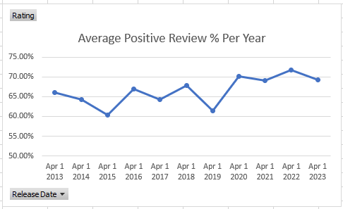
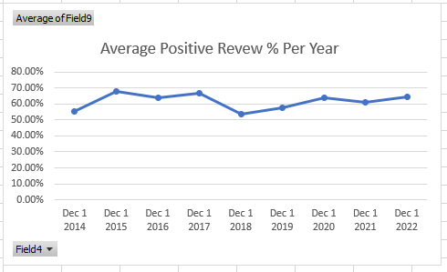

Owen Pick's analysis of game reviews over time
Intro
Growing up, I would always hear nostalgia-driven statements about how games are getting worse as time goes on, so I wanted to put that to the test. I obtained data on the steam releases through Kaggle. The data was a little difficult to work with because the date category was not a date datatype and excel would not format it correctly even with its tool built for doing that, which mean I could not easily sort it by date. I analyzed the data using Microsoft Excel’s “Analyze Data” function. The results are shown below.
Hypothesis
Despite many people claiming that older games were better, newer games score higher ratings than older games.
Method
The average rating of sample of 100s of game release on the same day* was taken, but in different years.
Results


Conclusion: older games, in fact, receive slightly worse reviews than newer ones.
Possible Confounding Variables
- In order to be able to actually process this data in excel, it had do be limited to just April, so it is possible, though unlikely, that the other month may have different results.
- It is possible that even though the games were released earlier in time, they were getting reviews to this day, and people might not be as forgiving today as they were back in 2015.
- If the bullet point above is true, it is also possible that older games may not still run on modern hardware, and thus people will review it negatively. but the opposite argument can be made about newer games
*The data was formatting in such a way that I could not sort by date, making it extremely difficult to just sort by year
**The dataset was also to large to create graphs for so I hade to trim down the sample size from ~60,000 to around 300
Khan Academy Modules
In the first module, I learned about how data is stored, specifically, how data is stored in a CSV file. I also learned how tons of these csv-like files can be combined to create databases and can be interfaced with SQL. I also learned a bit about some basic statistics and how to find basic correlation. I also learned how data can be visualized.
In the second module, I learned about how data is getting bigger and bigger and how we are now in the “data age” as the website puts it with humans having created over 175 zettabytes of data. I learned about the source of big data and how most of it comes from science projects such as the Large Hadron Collider particle accelerator and how a significant chunk of it is from digital libraries and medical records.
In the final module, I got an overview of machine learning algorithms, more specifically, a quick overview of Neural networks. This module also talked about how bias is can show up in data and how it can influence hiring decisions, as well as how it can be used in the criminal justice system (exactly like what was talked about in Hello World – Justice). The final section also went over how bias can show up in facial recognition software and how people have started moving to oppose the use of facial recognition. Machine learning bias also shows up in other places you might not expect such as language translation.
I didn't have too much trouble with the unit test and got a decent score on it the first time I took it. I thought the concepts in the unit weren't too difficult to understand